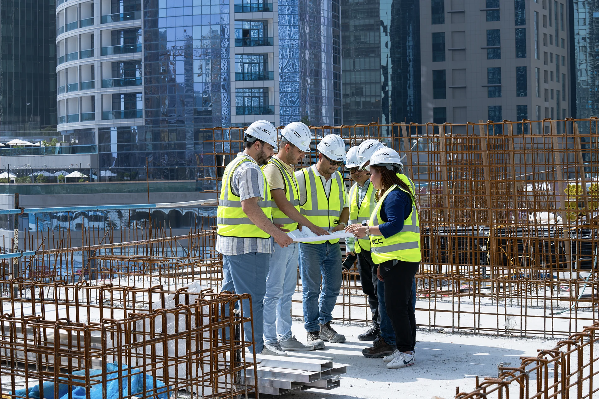
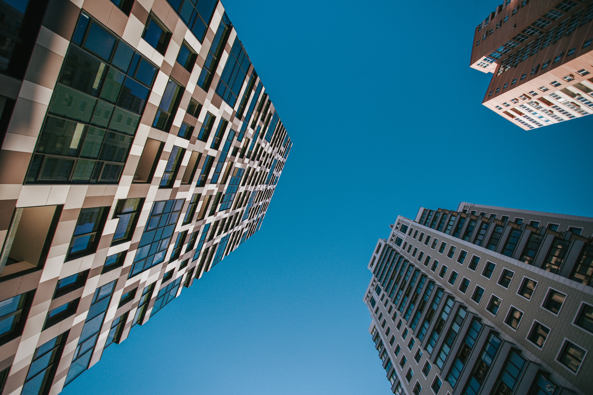
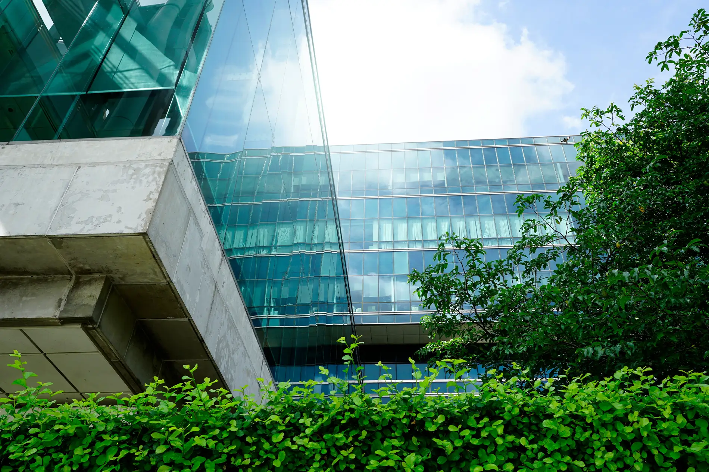

Construction
GS Builder & Engineers has been instrumental in shaping communities across Islamabad and Pakistan since 2006.
We pride ourselves on implementing the best value-engineered, innovative solutions, maintaining our reputation for quality, timely delivery, and engineering excellence.
Each of our projects is marked by our signature combination of technical excellence and creative vision for a sustainable, more efficient, and decarbonised built environment.

Proactive Problem Solving
Our construction approach is to proactively engage in finding best-in-class solutions and methods for our clients. Challenges and unforeseen issues are part of any construction project, we believe in taking ownership and understanding that addressing issues promptly and effectively is crucial to the success of a project.
Our team is trained to anticipate potential problems and find solutions, ensuring that projects stay on track and meet the highest standards.
Construction Tabs
Ownership
Our dedication to taking ownership of every building and project from start to finish sets us apart in the construction and contracting industry through close partnerships with clients and stakeholders. We confidently make tough decisions and proactively tackle challenges. This approach often leads to stronger, more efficient project outcomes and greater appreciation from our clients.

Excellence
Our dedication to excellence is steadfast. Each phase is carefully overseen and executed. We enforce rigorous quality control measures and follow the highest industry standards. Our team of skilled professionals is devoted to delivering projects that surpass expectations.

Sustainability
Sustainability is central to our business philosophy. We are dedicated to environmentally responsible practices, from utilizing sustainable materials to adopting energy-efficient construction methods. Our aim is to assist our clients in creating buildings that are not only visually appealing and functional but also environmentally sustainable for future generations. We pursue perfection and achieve excellence through continuous improvement, ensuring that our practices evolve to meet the highest standards of quality and sustainability. Our commitment to lean excellence has earned us international recognition, further solidifying our dedication to delivering superior results.
Ready to Build Smarter?
Tell us about your project — a senior engineer will reply within one working day, and your first consultation is always free.
Book Free Consultation